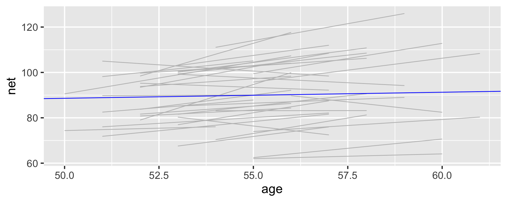
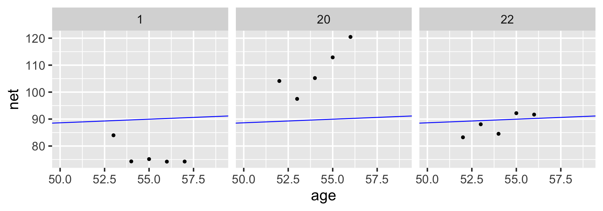
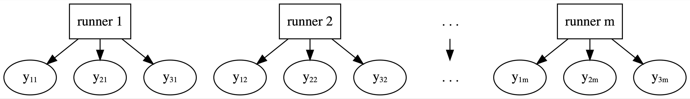
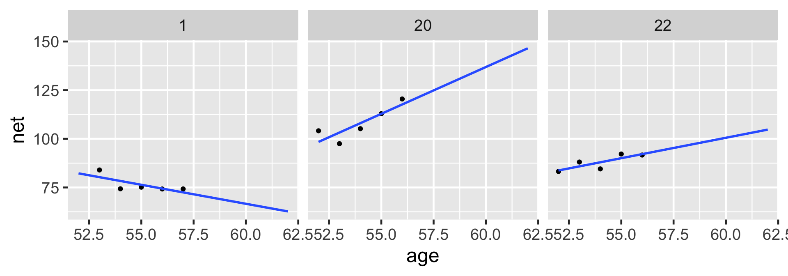

# A tibble: 2 × 5
term estimate std.error conf.low conf.high
<chr> <dbl> <dbl> <dbl> <dbl>
1 (Intercept) 75.2 24.6 43.7 106.
2 age 0.268 0.446 -0.302 0.842
# Plot of the posterior median modelggplot(running, aes(x = age, y = net, group = runner)) +geom_smooth(method ="lm", se =FALSE, color ="gray", size =0.5) +geom_abline(aes(intercept =75.2, slope =0.268), color ="blue")

# Select an example subsetexamples <- running %>%filter(runner %in%c("1", "20", "22"))ggplot(examples, aes(x = age, y = net)) +geom_point() +facet_wrap(~ runner) +geom_abline(aes(intercept =75.2242, slope =0.2678), color ="blue")

Though the observations on one runner might be independent of those on another, the observations within a runner are correlated. That is, how fast a runner ran in their previous race tells us something about how fast they’ll run in the next.
With respect to the relationship between running time and age, people are inherently different.
Framework of a complete pooled model:
Drawbacks of a complete pooling approach:
we violate the assumption of independence; and, in turn,
we might produce misleading conclusions about the relationship itself and the significance of this relationship.
No pooling

No pooling approach builds a separate model for each runner.
Let \((Y_{ij}, X_{ij})\) denote the observed run times and age for runner \(j\) in their \(i\)th race. Then the data structure for the Normal linear regression model of run time vs age for runner \(j\) is:
This model allows for each runner \(j\) to have a unique intercept \(\beta_{0j}\) and age coefficient \(\beta_{1j}\).
On the context of running, the no pooled models reflect the fact that some people tend to be faster than others (hence the different \(\beta_{0j}\)) and that changes in speed over time aren’t the same for everyone (hence the different \(\beta_{1j}\)).

Based on this model, what do you anticipate that your running time will be at the age of 55?
Drawbacks of a no pooling approach:
We cannot reliably generalize or apply the group-specific no pooled models to groups outside those in our sample.
No pooled models assume that one group doesn’t contain relevant information about another, and thus ignores potentially valuable information. This is especially consequential when we have a small number of observations per group.
Partial Pooling
Examples: Students within classrooms, patients within hospitals, different runs for each runner (longitudunal, repeated-measures)
Within-group variability
The degree of the variability among multiple observations within each group can be interesting on its own. For example, we can examine how consistent an individual’s running times are from year to year.
Between-group variability
Hierarchical data also allows us to examine the variability from group to group. For example, we can examine the degree to which running patterns vary from individual to individual.
# A tibble: 4 × 3
artist count popularity
<fct> <int> <dbl>
1 Mia X 4 13.2
2 Chris Goldarg 10 16.4
3 Lil Skies 3 79.3
4 Camilo 9 81
Complete pooling
Ignore artists and lump all songs together
No pooling
Separately analyze each artist and assume that one artist’s data doesn’t contain valuable information about another artist
Partial pooling (via hierarchical models)
Acknowledge the grouping structure, so that even though artists differ in popularity, they might share valuable information about each other and about the broader population of artists.
The hierarchy
Layer 1:
\(Y_{ij} | \mu_j, \sigma_y \hspace{-0.075in} \sim \text{model of how song popularity varies WITHIN artist } j\)
Layer 2:
\(\mu_j | \mu, \sigma_\mu \hspace{-0.075in} \sim \text{model of how the typical popularity} \mu_j \text{varies BETWEEN artists}\)
Layer 3:
\(\mu, \sigma_y, \sigma_\mu \hspace{-0.075in} \sim \text{prior models for shared global parameters}\)
\(\mu_j\) = mean song popularity for artist \(j\); and
\(\sigma_y\) = within-group variability, i.e., the standard deviation in popularity from song to song within each artist.
Popularity varies from artist to artist. We model this variability in mean popularity between artists by assuming that the individual mean popularity levels, \(\mu_j\), are Normally distributed around \(\mu\) with standard deviation \(\sigma_\mu\)
\(\mu\) = the global average of mean song popularity \(\mu_j\) across all artists \(j\), i.e., the mean popularity rating for the most average artist; and
\(\sigma_\mu\) = between-group variability, i.e., the standard deviation in mean popularity \(\mu_j\) from artist to artist.
There’s a difference between \(\mu_j\) and \(\mu\). When a parameter has a subscript \(j\), it refers to a feature of group \(j\). When a parameter doesn’t have a subscript \(j\), it’s the global counterpart, i.e., the same feature across all groups.
Subscripts signal the group or layer of interest. For example, \(\sigma_y\) refers to the standard deviation of \(Y\) values within each group, whereas \(\sigma_\mu\) refers to the standard deviation of means \(\mu_j\) from group to group.
To indicate that the artist variable defines the group structure of our data, as opposed to it being a predictor of popularity, the appropriate formula here is popularity ~ (1 | artist).
The prior for \(\sigma_\mu\) is specified by prior_covariance. For this particular model, with only one set of artist-specific parameters \(\mu_j\), this is equivalent to an Exp(1) prior. (We will learn more about prior_covariance next lecture).
# Store the simulation in a data framespotify_hierarchical_df <-as.data.frame(spotify_hierarchical)# Check out the first 3 and last 3 parameter labelsspotify_hierarchical_df %>%colnames() %>%as.data.frame() %>%slice(1:3, 45:47)
\(\sigma_\mu^2\) = Sigma[artist:(Intercept),(Intercept)].This is not a typo. The default output gives us information about the standard deviation within artists ( \(\sigma_y\) ) but the variance between artists ( \(\sigma_\mu^2\) ).
Pay attention to effects = fixed, where “fixed” is synonymous with “non-varying” or “global.”
Per the results, there’s an 80% chance that the average artist has a mean popularity rating between 49.2 and 55.6.
To call up the posterior medians for \(\sigma_y\) and \(\sigma_\mu\), we can specify effects = "ran_pars", i.e., parameters related to randomness or variability:
tidy(spotify_hierarchical, effects ="ran_pars")
# A tibble: 2 × 3
term group estimate
<chr> <chr> <dbl>
1 sd_(Intercept).artist artist 15.2
2 sd_Observation.Residual Residual 14.0
The posterior median of \(\sigma_y\) (sd_Obervation.Residual) suggests that, within any given artist, popularity ratings tend to vary by 14 points from song to song. The between standard deviation \(\sigma_\mu\) (sd_(Intercept).artist) tends to be slightly higher at around 15.2. Thus, the mean popularity rating tends to vary by 15.2 points from artist to artist.
proportion of \(\text{Var}(Y_{ij})\) that can be explained by differences in the observations within each group:
\[\frac{\sigma^2_y}{\sigma^2_\mu + \sigma^2_y}\]
proportion of \(\text{Var}(Y_{ij})\)that can be explained by differences between groups
These two sources of variability suggest that the popularity levels among multiple songs by the same artist tend to have a moderate correlation near 0.54.
15.1^2/ (15.1^2+14.0^2)
[1] 0.5377468
Thinking of this another way, 54% of the variability in song popularity is explained by differences between artists, whereas 46% is explained by differences among the songs within each artist:
14.0^2/ (15.1^2+14.0^2)
[1] 0.4622532
Posterior analysis of group-specific parameters
\[\mu_j = \mu + b_j \]
Here, \(b_j\) describes the difference between artist \(j\)’s mean popularity and the global mean popularity.
artist_summary <-tidy(spotify_hierarchical, effects ="ran_vals", conf.int =TRUE, conf.level =0.80)# Check out the results for the first & last 2 artistsartist_summary %>%select(level, conf.low, conf.high) %>%slice(1:2, 43:44)
# Get MCMC chains for each mu_jartist_chains <- spotify_hierarchical %>% tidybayes::spread_draws(`(Intercept)`, b[,artist]) %>%mutate(mu_j =`(Intercept)`+ b) # Check it outartist_chains %>%select(artist, `(Intercept)`, b, mu_j) %>%head(4)
# A tibble: 4 × 4
# Groups: artist [4]
artist `(Intercept)` b mu_j
<chr> <dbl> <dbl> <dbl>
1 artist:Alok 50.1 11.4 61.5
2 artist:Atlas_Genius 50.1 -9.81 40.2
3 artist:Au/Ra 50.1 12.3 62.4
4 artist:Beyoncé 50.1 22.2 72.3
# Get posterior summaries for mu_jartist_summary_scaled <- artist_chains %>%select(-`(Intercept)`, -b) %>% tidybayes::mean_qi(.width =0.80) %>%mutate(artist =fct_reorder(artist, mu_j))# Check out the resultsartist_summary_scaled %>%select(artist, mu_j, .lower, .upper) %>%head(4)
# A tibble: 2 × 3
artist count popularity
<fct> <int> <dbl>
1 Frank Ocean 40 69.8
2 Lil Skies 3 79.3
Our posterior understanding of Frank Ocean is based on 40 songs, the most of any artist in the dataset, we have only 3 songs for Lil Skies. We naturally have greater posterior certainty about Frank Ocean’s popularity, and hence narrower intervals.
Posterior Prediction
First consider the posterior prediction for an observed group or artist, Frank Ocean, the \(j\) = 39th artist in our sample.
The first layer of our hierarchical model holds the key in this situation: it assumes that the popularity of individual Frank Ocean songs are Normally distributed around his own mean popularity level \(\mu_j\) with standard deviation \(\sigma_y\).
Thus, to approximate the posterior predictive model for the popularity of Ocean’s next song on Spotify, we can simulate a prediction from the Layer 1 model evaluated at each of the 20,000 MCMC parameter sets \(\left\lbrace \mu_j^{(i)}, \sigma_y^{(i)}\right\rbrace\):
The resulting predictions \(\left\lbrace Y_{\text{new},j}^{(1)}, Y_{\text{new},j}^{(2)}, \ldots, Y_{\text{new},j}^{(20000)} \right\rbrace\) and corresponding posterior predictive model will reflect two sources of variability, and hence uncertainty, in the popularity of Ocean’s next song:
within-group sampling variability in \(Y\), i.e., not all of Ocean’s songs are equally popular; and
posterior variability in the model parameters \(\mu_j\) and \(\sigma_y\), i.e., the underlying mean and variability in popularity across Ocean’s songs are unknown and can, themselves, vary.
# Posterior summary of mu_jartist_summary_scaled %>%filter(artist =="artist:Frank_Ocean")
# A tibble: 1 × 7
artist mu_j .lower .upper .width .point .interval
<fct> <dbl> <dbl> <dbl> <dbl> <chr> <chr>
1 artist:Frank_Ocean 69.4 66.5 72.2 0.8 mean qi
Next consider posterior prediction for a yet unobserved group, Mohsen Beats.
No observed songs for Mohsen Beats means that we do not have any information about their mean popularity \(\mu_j\), and thus can’t take the same approach as we did for Ocean.
What we do know is this: (1) Mohsen Beats is an artist within the broader population of artists, (2) mean popularity levels among these artists are Normally distributed around some global mean \(\mu\) with between-artist standard deviation \(\sigma_\mu\) (Layer 2), and (3) our 44 sampled artists have informed our posterior understanding of this broader population. Then to approximate the posterior predictive model for the popularity of Mohsen Beats’ next song, we can simulate 20,000 predictions \(\left\lbrace Y_{\text{new},\text{mohsen}}^{(1)}, Y_{\text{new},\text{mohsen}}^{(2)}, \ldots, Y_{\text{new},\text{mohsen}}^{(20000)} \right\rbrace\) through a two-step process:
Step 1: Simulate a potential mean popularity level \(\mu_{\text{mohsen}}\) for Mohsen Beats by drawing from the Layer 2 model evaluated at each MCMC parameter set \(\left\lbrace \mu^{(i)}, \sigma_\mu^{(i)}\right\rbrace\):
Step 2: Simulate a prediction of song popularity \(Y_{\text{new},\text{mohsen}}\) from the Layer 1 model evaluated at each MCMC parameter set \(\left\lbrace \mu_{\text{mohsen}}^{(i)}, \sigma_y^{(i)}\right\rbrace\):
The additional step in our Mohsen Beats posterior prediction process reflects a third source of variability. When predicting song popularity for a new group, we must account for:
within-group sampling variability in \(Y\), i.e., not all of Mohsen Beats’ songs are equally popular;
between-group sampling variability in \(\mu_j\), i.e., not all artists are equally popular; and
posterior variability in the global model parameters \((\sigma_y, \mu, \sigma_\mu)\).
We’re able to predict with 80% posterior certainty that their next song will have a popularity rating somewhere between 25.66 and 78.6:
Shrinkage refers to the phenomenon in which the group-specific local trends in a hierarchical model are pulled or shrunk toward the global trends.
When utilizing weakly informative priors, the posterior mean predictions of song popularity from the hierarchical model are (roughly) weighted averages of those from the complete pooled ( \(\overline{y}_{\text{global}}\) ) and no pooled ( \(\overline{y}_j\) ) models:
In posterior predictions for artist \(j\), the weights given to the global and local means depend upon how much data we have on artist \(j\) ( \(n_j\) ) as well as the comparison of the within-group and between-group variability in song popularity ( \(\sigma_y\) and \(\sigma_\mu\) ). These weights highlight a couple of scenarios in which individualism fades, i.e., our hierarchical posterior predictions shrink away from the group-specific means \(\overline{y}_j\) and toward the global mean \(\overline{y}_\text{global}\):
Shrinkage increases as the number of observations on group \(j\), \(n_j\), decreases. That is, we rely more and more on global trends to understand a group for which we have little data.
Shrinkage increases when the variability within groups, \(\sigma_y\), is large in comparison to the variability between groups, \(\sigma_\mu\). That is, we rely more and more on global trends to understand a group when there is little distinction in the patterns from one group to the next.